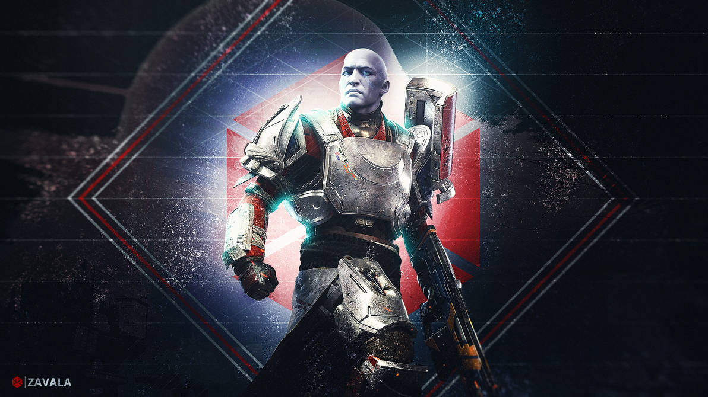

Comandante Zavala é um Guardião Desperto que serve como Vanguarda da classe Titã e Comandante geral da Vanguarda da Última Cidade. Severo e intransigente, o único objetivo de Zavala é salvaguardar a humanidade dentro da Última Cidade contra todas as ameaças. Ele supervisiona todas as operações militares dos Guardiões e liderou os Guardiões à vitória tanto na Guerra dos Possuídos quanto na Guerra Vermelha. Após ambos os conflitos, Zavala tornou-se cada vez mais isolado e relutante em comprometer Guardiões em conflitos fora da Última Cidade.
